地政学
ブッダガヤはビハール州ガヤ近郊の小都市ですが、仏教世界の象徴性は国境を越えます。僧院、寄進、外交行事、巡礼路が集まり、空港と鉄道を通じて南アジアと東南アジアの信仰圏を結ぶ聖地です。観光政策も関わります。
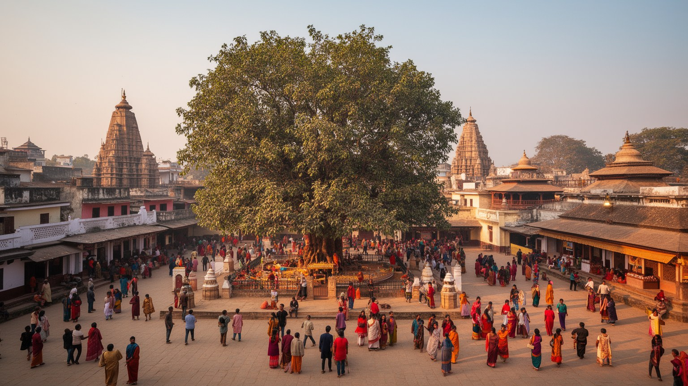
🇮🇳 インド / ビハール州 / World City Atlas
釈迦が悟りを開いた場所として世界の仏教徒を迎える小都市です。大菩提寺、菩提樹、国際僧院、農村、観光労働、福祉と衛生の課題が短い街路に重なります。
都市の骨格
ブッダガヤは大都市ではありません。ですが大菩提寺を中心に、ガヤの鉄道、国際巡礼、周辺農村、仏教復興、観光労働が集まり、地方町の規模を超える意味を持ちます。
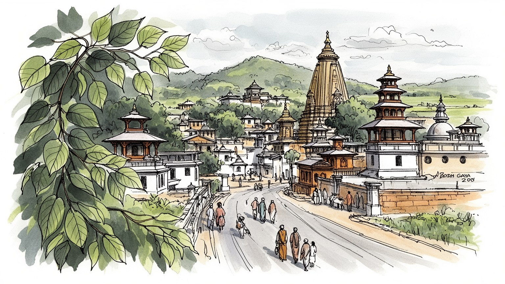
ブッダガヤはビハール州ガヤ近郊の小都市ですが、仏教世界の象徴性は国境を越えます。僧院、寄進、外交行事、巡礼路が集まり、空港と鉄道を通じて南アジアと東南アジアの信仰圏を結ぶ聖地です。観光政策も関わります。
経済は巡礼観光、宿泊、飲食、土産物、交通、農業、清掃、建設、福祉活動に支えられます。繁忙期と閑散期の差が大きく、土地を持つ人と日雇いの働き手の間で収入格差が広がりやすい構造です。寄付収入も重要です。
上座部、大乗、チベット系、日本、タイ、ミャンマー、ブータン、スリランカなど多様な仏教実践が並びます。読経、瞑想、灯明、托鉢、祈願が同じ寺院圏で行われ、地域のヒンドゥー信仰も残る町です。複数暦も動きます。
巡礼者の歩行の背後で、住民は学校、井戸、病院、畑、市場、家賃、交通、雇用を抱えます。観光は仕事を生むが、土地価格、物乞い、衛生、混雑、宗教空間の商業化も日常を揺らす課題です。静けさも生活が支えます。
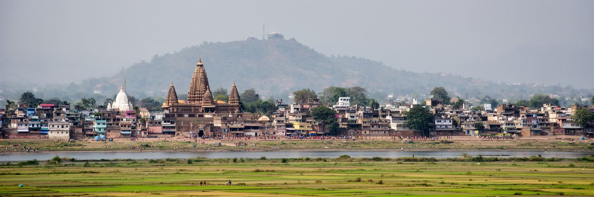
ブッダガヤはファルグ川に近いビハール南部の平地にあり、ガヤ市の鉄道、空港、行政、商業に支えられています。都市の中心は大菩提寺と菩提樹で、釈迦の悟りの記憶が一点に集まるため、町の規模に比べて宗教地理上の重みは非常に大きいです。寺院の周囲には巡礼者の列、警備、土産物店、僧院、宿泊施設、茶店、瞑想の場が密集し、少し離れると畑、村落、学校、低層住宅が現れます。世界的な聖地でありながら、都市の身体は地方町の密度を保っています。乾いた季節の河床、雨季の水、酷暑、冬の霧は、祈りの静けさとインド内陸の厳しい環境を同時に感じさせます。空港や道路は巡礼者を運ぶが、最後の経験は寺院へ向かう徒歩の距離に残ります。狭い道路を行くバス、電動リキシャ、僧侶、地元の子ども、農村からの買い物客が交わり、悟りの記憶は日常の移動から切り離せません。周辺の土地利用も、聖地に近いかどうかで意味を変えます。畑や空き地は将来のホテル用地として見られ、路地の小店は巡礼者向けに品ぞろえを変え、住民の移動は警備や行事に合わせて迂回します。静かな景観の背後では、土地、道、水、宗教記憶が常に交渉されています。聖地を点としてではなく周辺の集落や河川と一体で見ると、観光開発がどこに圧力をかけ、どこに生活の余地を残すのかが見えてきます。水辺と道の読み方が、町の将来像を左右します。
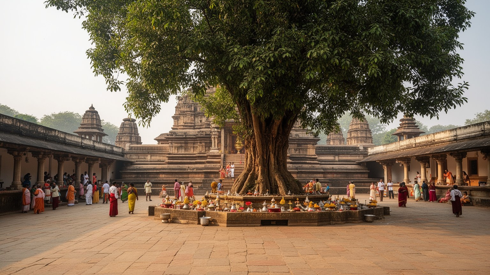
大菩提寺はブッダガヤの中心であり、仏教徒にとって単なる古建築ではありません。塔の姿、菩提樹、金剛宝座、祈りの回廊、灯明、五体投地を行う巡礼者の動きが重なり、悟りの出来事を現在の身体でたどる場所になっています。世界遺産としての価値は、建築史や考古学だけでなく、いまも続く祈りによって支えられます。保存管理では、石材の劣化、群衆の動線、警備、清掃、樹木の保護、儀礼用品の扱い、周辺開発の高さや音が問題になります。観光地として整えすぎれば聖地の緊張が薄れ、信仰だけを優先すれば遺構や安全が損なわれます。寺院を守るとは、過去を凍結することではなく、巡礼者が祈り続けられる環境と、遺産としての物理的な持続性を両立させることです。行政、寺院関係者、僧団、考古部局、警察、地元商人、国際的な仏教団体の利害が重なるため、境内の一枚の石や樹を囲む柵にも、保存と実践の折り合いが表れます。訪問者は美しい塔を眺めるだけでなく、床に額をつけて祈る人の時間、清掃する人の仕事、境内の静けさを守る規則を理解する必要があります。世界遺産という外部の評価が高まるほど、地元の信仰生活を鑑賞物にしない配慮が重要になります。修復工事、行列整理、夜間照明、撮影の可否は小さな管理に見えますが、信仰の尊厳と遺産の公開性を同時に測る実践です。祈りの場は、管理の細部で守られます。
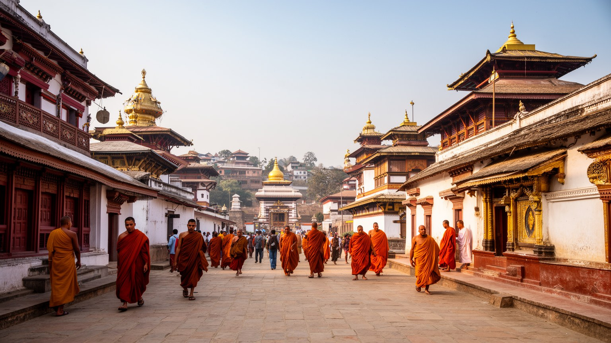
ブッダガヤの特徴は、大菩提寺の周囲に各国の僧院や寺院が集まることにあります。タイ、ミャンマー、スリランカ、ブータン、チベット系、ベトナム、日本、中国系、ネパールなどの施設が、それぞれの建築様式、読経、食事、教育、宿泊、寄進の仕組みを持ち込みます。小さな町でありながら、街路を歩くと仏教世界の地図を横断するような感覚が生まれます。ただし、これは単純な国際交流の展示ではありません。各僧院は巡礼者の滞在、僧侶の学習、儀礼、慈善活動、外交的な交流、祖国との寄付関係を担い、時に地域社会との距離も生みます。広い敷地や高い塀は静けさを守るが、地元住民から見れば土地利用や雇用のあり方をめぐる課題にもなります。宗派や言語が違っても、悟りの地を尊ぶ感覚が共通の中心を作る一方、儀礼の作法、食の規則、亡命や国家イメージが建物や行事に現れます。朝の読経、僧衣の色、食堂の匂い、寄進箱、通訳、医療キャンプは、国際性を日常に刻みます。僧院の行事は地域の雇用や交通にも影響し、祭礼期には臨時の店や警備が増えます。国際的な寄付が入るほど、その恩恵に地元住民がどう関われるかも問われます。僧院街は静かな宗教景観であると同時に、世界宗教が地方町の土地と労働をどう使うかを示す場所でもあります。言語の違いは祈りの多様さを広げる一方、案内、医療、災害時対応では翻訳と調整を必要にします。
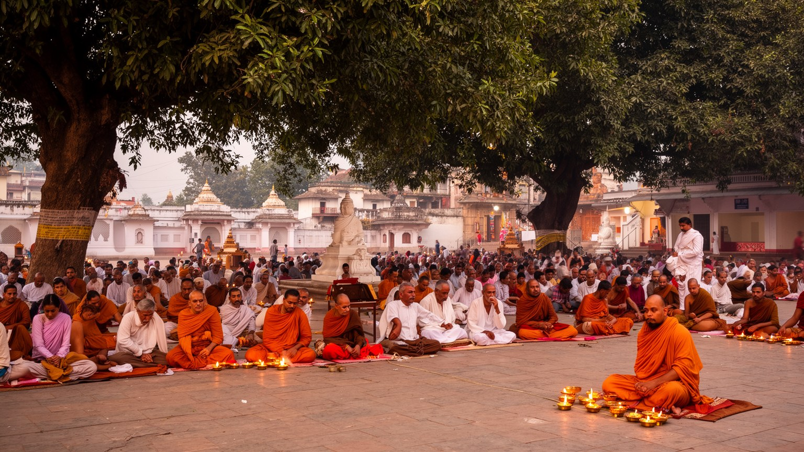
ブッダガヤの巡礼は、見ることよりも座ること、歩くこと、唱えることに重心があります。大菩提寺の回廊を巡る人、菩提樹の下で静かに瞑想する人、数千回の五体投地を続ける人、灯明を供える家族、経典を読む僧侶は、同じ境内で異なる時間を過ごします。団体観光の滞在が数時間で終わることも多い一方、僧侶や在家信者は数日から数週間、季節によってはさらに長く滞在し、修行のリズムを組み立てます。瞑想は個人の内面の営みですが、それを可能にするには安全な宿、静かな場所、飲食、トイレ、医療、寄付、翻訳、清掃、警備が必要です。祈りの集中は、都市の実務に支えられて初めて成立します。巡礼者が増えると、静けさと混雑、信仰と商売、写真撮影と尊厳の距離が問題になります。境内の沈黙は自然に生まれるものではなく、多くの人が声を抑え、靴を脱ぎ、順番を守り、祈る人の近くをゆっくり歩くことで保たれています。冬の大きな法要期には、宿、食堂、道路、境内の座る場所まで需要が集中します。静かな宗教実践は、実際には膨大な準備と調整を伴う公共の行事でもあります。巡礼を尊重するとは、祈る身体の時間と、それを支える都市の労働を同時に見ることです。短い滞在者も長期修行者も同じ空間を使うため、速度の違う旅を衝突させない設計が聖地の質を左右します。沈黙を守る作法も、都市の公共性の一部です。
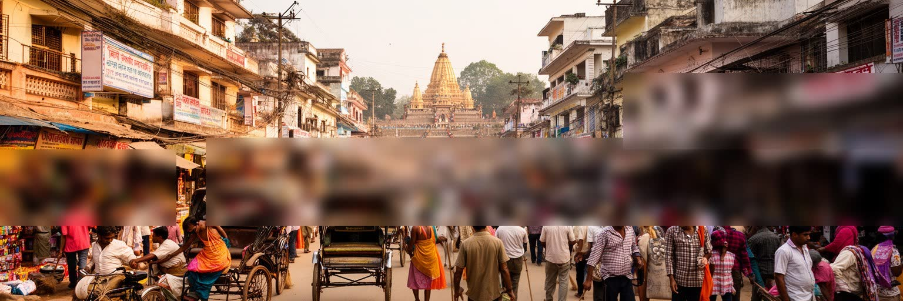
ブッダガヤの経済は巡礼観光に大きく依存しています。ホテル、ゲストハウス、レストラン、茶店、土産物、仏具、通訳、案内、リキシャ、タクシー、清掃、警備、建設、寺院管理、国際団体の事務が雇用を生みます。繁忙期には町の人口感覚が一変し、道路や市場に多言語の声があふれるが、閑散期には収入が急に細る仕事も多いです。観光の利益は均等に広がらず、土地や建物を持つ人、国際ネットワークを持つ事業者、宿泊業者が有利になりやすい一方、露店、日雇い、清掃、物売り、案内人、農村から来る労働者は不安定な立場に置かれやすいです。聖地であることは貧困を自動的に和らげありません。むしろ、巡礼者の善意や寄付があるために、物乞い、子どもの路上労働、仲介業、慈善団体の活動が複雑に絡みます。観光収入を地域の教育、衛生、医療、女性の仕事、職業訓練へつなげられるかが、都市の成熟を決めます。聖地経済を読むには、祈りの風景の背後にある季節労働と土地価格を見る必要があります。巡礼者向けの商品は信仰心に近い場所で売られるため、強引な商売は反発を生みやすく、過度な値下げは働き手の生活を削ります。公正な観光は、安さだけでなく地域に残る利益で考える必要があります。宿泊税、店舗許可、公共トイレ、職業訓練の整備は、聖地経済を一時的な稼ぎから地域の基盤へ変える鍵になります。収入の季節差を小さくする仕組みも欠かせません。
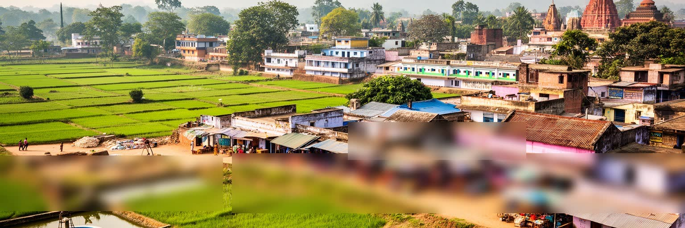
ブッダガヤを大菩提寺だけで見ると、周囲に広がる住民生活が見えにくくなります。町の外縁には畑、井戸、低層住宅、学校、小さな店、未舗装の道があり、住民は農業、日雇い、露店、運転、清掃、宿泊業、建設、家事労働を組み合わせて暮らします。観光客が静けさを求める道は、地元の子どもの通学路であり、女性が水や買い物を運ぶ道であり、農家が市場へ向かう道でもあります。聖地の国際性は華やかですが、地域の暮らしには電力、下水、医療、教育、住宅、排水、ゴミ処理、雇用の不安が残ります。土地価格が上がると、寺院やホテルに近い場所ほど住民が住み続けにくくなることもあります。慈善学校や医療キャンプ、僧院の支援は重要ですが、地域行政の基盤を代替するだけでは長期的な公平性は保てありません。聖地の価値を守るには、清潔な境内だけでなく、周辺集落の水、道路、学校、女性の安全、若者の仕事を同じ都市課題として扱う必要があります。観光の説明では住民は背景にされがちですが、実際には彼らの土地、労働、忍耐が聖地の運営を支えています。寺院の外側の暮らしを読むことで、宗教都市は現実の社会として見えてきます。子どもの通学、女性の移動、病院への距離、農作業の季節は、巡礼の暦とは別の生活時間を作ります。その時間を尊重できるかが、聖地と地域の信頼を決めます。暮らしの声を都市計画に反映する回路が必要です。
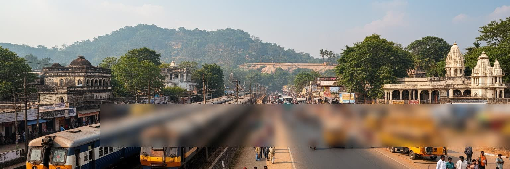
ブッダガヤは単独で完結する都市ではなく、近接するガヤ市と強く結ばれています。長距離鉄道の駅、行政機能、商業、病院、教育、卸売、市場はガヤ側に厚く、巡礼者の多くもまずガヤを通って聖地へ向かいます。ガヤ自体もヒンドゥー教の祖先供養で知られる宗教都市であり、ファルグ川沿いの儀礼とブッダガヤの仏教巡礼が、同じ地域の異なる宗教地理を形づくります。空港や道路整備は国際巡礼を便利にしたが、交通量の増加は騒音、事故、排気、駐車、歩行者の安全という課題を生みます。聖地の静けさを保つためには、車両規制、歩行空間、公共交通、バリアフリー、案内表示を細かく設計する必要があります。ホテルの食材、建材、日用品、労働力、医療サービスは広域から供給され、観光収入も周辺の市場へ流れます。世界の巡礼者が目指す場所は小さな寺院圏ですが、その背後には鉄道都市、農村、州政府、国際便、道路網があります。ガヤで宿泊や買い物を済ませる巡礼者もいれば、ブッダガヤに長く滞在する修行者もいるため、二つの都市は競争しながら補完します。交通政策は、その関係を乱さずに安全と静けさを保つ役割を担います。駅前の混雑、空港便の季節性、タクシー料金、道路照明は、巡礼者の満足だけでなく住民の通勤と救急搬送にも直結します。二都市を一体で考える視点が、観光と生活の両立を助ける地域の前提です。
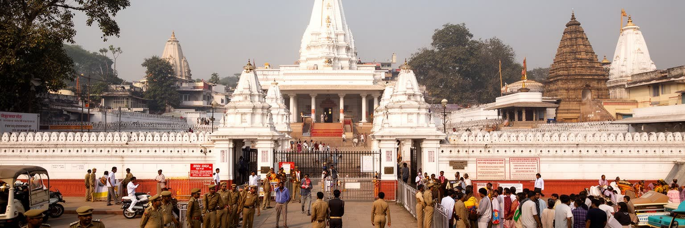
ブッダガヤは慈悲と悟りを象徴する場所として語られるが、現代の聖地である以上、治安と宗教政治から自由ではありません。多くの国の僧侶や信徒が集まり、著名な宗教指導者が訪れ、国際的な行事が開かれるため、警備、入場管理、手荷物検査、監視、交通規制は日常の一部になっています。平和の象徴である場所ほど攻撃対象になり得るという矛盾があり、警備が強まれば安全は高まるが、巡礼者の自由な祈りや住民の移動には制約も出ます。さらに、寺院管理をめぐる宗教団体、行政、地元社会、国際的な仏教ネットワークの関係は単純ではありません。インド国内では仏教徒は少数派であり、ブッダガヤはヒンドゥー社会、仏教復興運動、ダリット運動、国際仏教外交が交差する場所にもなります。宗教的な敬意を掲げるだけでは、管理権、代表性、寄付金、土地、儀礼の優先順位をめぐる問題は消えません。聖地の公共性を守るには、誰が意思決定に参加し、誰の声が周辺化されるのかを見続ける必要があります。安全対策は巡礼者の安心を支えますが、過度な管理は祈りの自発性を弱めます。聖地の秩序は、警備の強さだけでなく、信頼できる説明と公平な参加によって成り立ちます。観光客には見えにくい会議、許認可、宗教団体間の調整が、境内の開放時間や儀礼の順序を決めています。平和の象徴を守る仕事は、対立を見ないことではなく、対立を暴力へ向かわせない制度を作ることです。
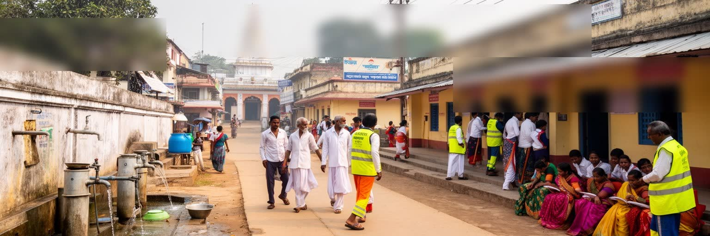
巡礼者が静かに祈るためには、清潔な水、トイレ、排水、ゴミ収集、道路清掃、医療、救急、感染症対策が欠かせません。ブッダガヤでは、繁忙期に人口が急増するため、宿泊施設、屋台、寺院、バス駐車場、仮設店舗から出る廃棄物と排水が都市の能力を試します。聖地の印象を守る清掃は、しばしば低賃金の労働や非公式な作業に支えられ、働く人の安全装備や社会保障が十分でないこともあります。物乞いや路上で暮らす人、障害のある人、孤児支援施設、巡礼者向けの無料食事、医療キャンプは、慈善と福祉の複雑な関係を示します。寄付は緊急の助けになりますが、長期的には教育、職業訓練、女性の就労、衛生インフラ、行政サービスへつなげなければ依存を固定する恐れがあります。宗教都市の福祉は善意の表現であると同時に、貧困が見える場所でもあります。ブッダガヤの尊厳は、境内だけでなく、周辺のトイレ、診療所、学校、ゴミ置き場、清掃員の休憩場所にも表れます。とくに雨季には排水不良やぬかるみが移動と健康に影響し、乾季には水の確保と埃が問題になります。季節の変化に耐える基盤を作ることが、聖地の静けさを長く守る条件になります。福祉を寄付だけに任せず、自治体の下水、保健、廃棄物政策へ接続できるかが、聖地の持続性を左右します。見えない基盤こそ、祈りの環境と町の尊厳を支えます。その改善は観光の質も高めます。
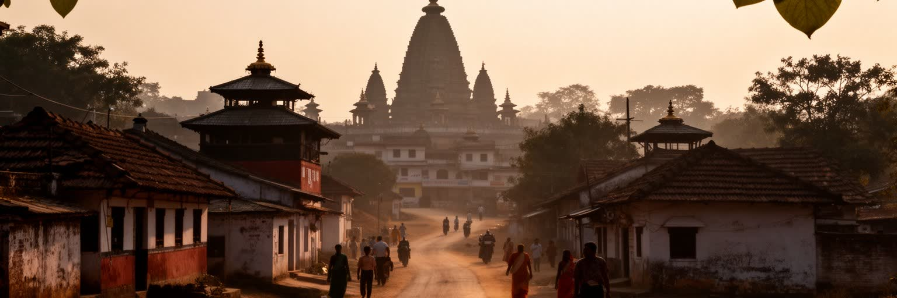
ブッダガヤは、世界都市の一般的な尺度では小さな町に見えます。しかし、都市の重要性を人口やGDPだけで測らないなら、ここは世界の宗教地図を動かす場所です。大菩提寺と菩提樹は、仏教徒にとって悟りの起点であり、各国の僧院、巡礼者、寄進、外交的な訪問、学習、瞑想、慈善活動を呼び込みます。同時に、周辺には農村、貧困、季節労働、衛生、教育、土地価格、交通、治安の課題があり、聖地の美しい印象だけでは都市の全体像を説明できません。ブッダガヤを読む鍵は、静けさの背後にある実務を見ることです。祈りを支える宿、清掃、道路、警備、翻訳、医療、農産物、寄付、行政があり、そこには収入格差や代表性の問題もあります。訪問者が境内で感じる平穏は、地域住民や労働者の時間と場所を使って成立しています。だからこの都市を尊重するとは、菩提樹の神聖さを認めるだけでなく、そこに住む人が教育を受け、衛生的に暮らし、観光の利益に参加できる条件を考えることでもあります。ここで問われるのは、聖なる場所を誰のために整えるのかという問題です。巡礼者、僧侶、住民、労働者、子ども、貧しい人が同じ町を使う以上、都市の評価は静けさと公平さの両方で測られなければなりません。聖性と地方都市性を同じ地図に置くことで、ブッダガヤは過去の記念碑ではなく、現代の観光、福祉、信仰が交渉される生きた都市として立ち上がります。